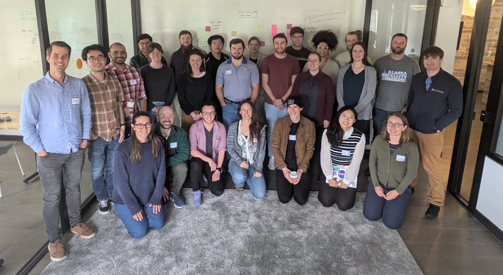
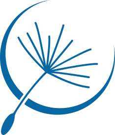
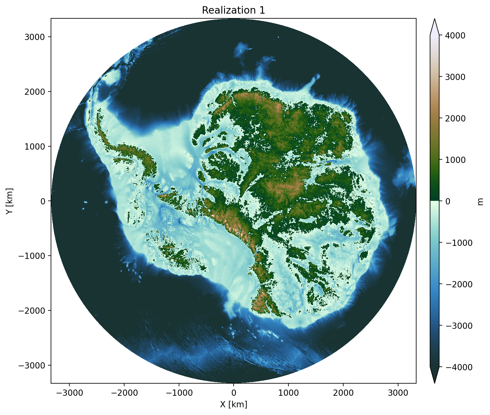
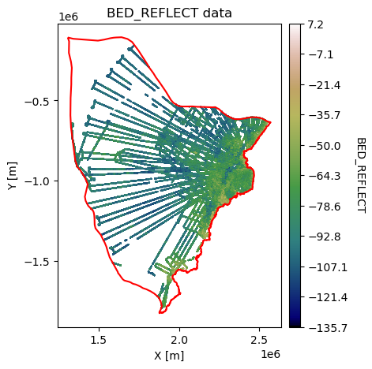
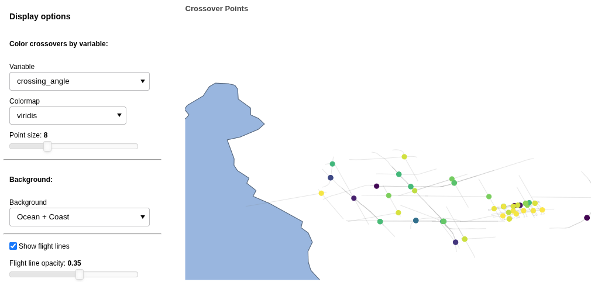
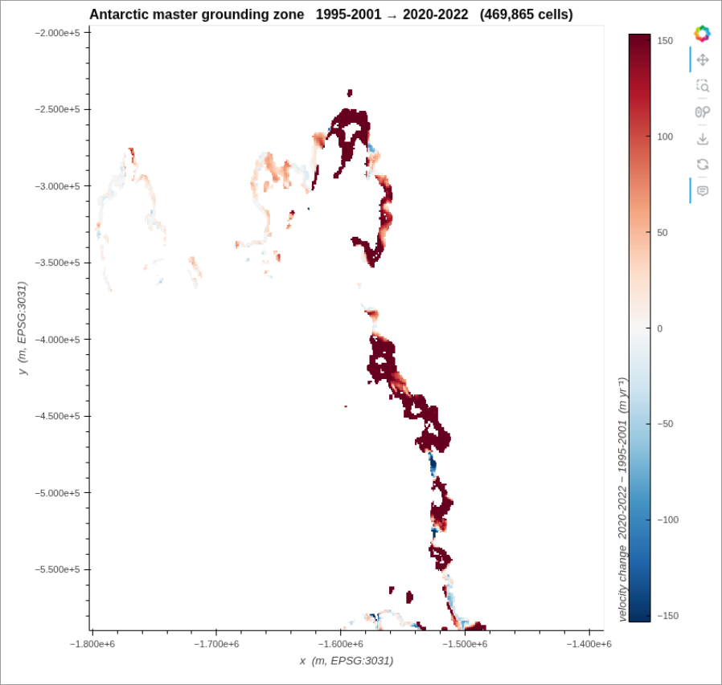
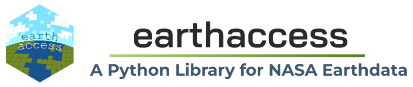

Recapping the first Connected Data Products Hackdays

Last week, Englacial and the Berkeley Institute for Data Science hosted a “hackdays” workshop to exchange ideas and prototype concepts for open, connected scientific data products in the cryosphere.

The workshop was supported by Astera’s open science program. A huge thank you to Prachee, Becky, and Seemay for making this happen!
The goal of this workshop was to prototype the patterns for creating connected scientific data products as software. Right now, most scientific data products are distributed as one-off NetCDF files with no clear path to reproduce, remix, update, or modify them. As the web of scientific data products and models grows, this can lead to long lag times between updates and complicated traceability.
We know how to produce and share open-source research software: put it on GitHub, license it under a permissive license, create a contributor guide, accept pull requests and issues, etc. For scientific data products, there’s no equivalent template to follow.
We invited 30 scientists and engineers to come together in Berkeley, CA to build connected scientific data products for the cryosphere and think about what parts of this template should be.
We didn’t solve everything, but a few themes emerged:
- Virtualization as a pathway for working with legacy datasets: Almost every data product and model requires working with legacy datasets, and this can be quite painful. When data formats are the main issue, VirtualiZarr and Icechunk offer clean ways to create a “virtual” cloud-optimized file that references back to the original file without rewriting any data. There was a huge amount of interest in virtualizing a variety of datasets, from radar sounder data to sea surface temperature to bed topography, in order to make working with these datasets in downstream software easier. Max Jones helped a number of teams to start understanding what it would take to virtualize their datasets.
- Documentation and update tracking is important: The status quo standard is usually to release a paper when the first version of a dataset is released. But what happens when you update that dataset? A number of teams worked on creating or updating runnable Jupyter Book documentation, using the new MyST backend in Jupyter Book 2.0. The DEMAGORGN team decided to start a blog to track update to their dataset.
- Search and selection across datasets remains a pain point: Three of our project teams worked on data access problems at the intersection of search. Both the “xover” and “penapple” teams worked on merging data across sensors or from models to observations; i.e., ICESat-2 and Open Polar Radar, and InSAR with modeled grounding lines. These access patterns are getting better with virtualization and other metadata technologies around access and search – and highlights that updates to the community infrastructure such as earthaccess and geojupyter can have outsized impact across multiple user groups.
Below is a brief recap of what a few of the teams worked on:
DEMOGORGN

Team: Mickey MacKie, Michael Field, Kage He
DEMOGORGN (Digital Elevation Models of Geostatistical ORiGiN) is a 100-member ensemble of geostatistical realizations of Antarctic bed topography, designed to support ice-sheet model uncertainty quantification. Rather than release the entire data product once, the team is designing for iterative updates as new data becomes available. During the hackdays, the team converted DEMOGORGN to cloud-optimized format and published it on Source Cooperative. The data product will be available from an Icechunk store, with each update tagged to a commit that can be referenced for reproducibility. They also built scripts for downloading regional subsets and for stitching MCMC inversions into the broader ensemble. To facilitate rapid annoncements of updates, they’ll be notifying about dataset changes on the Gator Glaciology blog.
GStatSim: New Applications for Large Radar Datasets

Team: Eliza Dawson, Robyn Marowitz, Emmy Muniz, Lindsay Stark, Joey Rotondo
GStatSim is a Python package for geostatistical simulation of spatial data. During the hackdays, this team expanded its Jupyter Book documentation with two new real-world application notebooks. The first demonstrates a full end-to-end workflow for HiCARS radar sounder data: downloading granules from NSIDC via earthaccess, parsing and consolidating flight-line text files into a single GeoParquet, and fitting variogram models for kriging and geostatistical simulation. The second notebook explores filling the Arctic “pole hole” — the gap in satellite sea-ice coverage near the pole — using geostatistical interpolation of sea-ice albedo. Together these notebooks show real-world approaches to connecting datasets through an open-source package to produce a new data product.
xover: xOPR Radar Sounder + ICESat-2 Crossover Analysis

Team: Michael Shahin, Donglai Yang, Hara Madhav Talasila, Jessica Scheick
The “xover” team looked at combining and comparing datasets from different instruments. They built a workflow that finds crossover points between airborne radar sounder data (from xOPR) and ICESat-2 laser altimetry tracks (using icepyx) over the Thwaites Glacier drainage basin. By intersecting the two datasets they produce “super-crossover” points: locations sampled by both sensors multiple times, enabling direct comparison of ice surface elevation and bed echo power. In addition to the pipeline for finding these crossover points, they built an interactive visualization widget that lets users explore crossover parameters — bed echo power, surface/bottom two-way travel time differentials, and more. The full pipeline outputs are stored as GeoParquet files for efficient downstream analysis.
Data selection and fusion using Discrete Global Grid Systems

Team: Yueyi Che, Shane Grigsby, Jessica Scheick
The “Penapple” team looked at the more general problem that “xover” was working on– how can we find (and extract) coincident data, i.e., model-to-data or data-to-data. Doing this is a two-step process: find the files that intersect, and then find the data within those files that intersect. The team tackled two use cases for this, identifying granule matches between ICESat-2 and xopr radar data, and extracting InSAR velocity from around a modeled grounding line which was used to derive a grounding zone anomaly for all of Antarctica. For the figure above, the team brought a new ‘line’ data type to the mortie geohashing and Discrete Global Grid library (previously only points and polygons were supported). One open question that surfaced from this work was if we need a standardized ‘spatial coverage’ type analogous to the python DateTime object.
earthaccess v1.0 API Design

earthaccess is a Python package for finding and accessing NASA’s Earth science datasets. One team worked on API improvements to make it easier to link earthaccess into other tools.Team: Matt Fisher, Trey Stafford, Joe Kennedy, Julia Lober
earthaccess is a Python library that makes it simple to search and download NASA Earthdata. With a v1.0 release on the horizon, this team spent the hackdays workshopping an object-oriented API design. The central proposal — introduced in issue #1250 and prototyped in PR #1298 — is a Results class returned by search and query methods. The class would expose methods like results.to_gdf() (returning a GeoDataFrame), results.to_geoparquet(), and results.to_stac(), making it easy to move data into Arrow-native and STAC-compliant workflows. The team also discussed a Client class that would let users scope authentication and system selection (production vs. UAT) explicitly, improving testability and removing hidden global state.